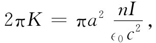

其次，再来考虑一个无限长螺线管。沿管的表面单位长度通有nI的环行电流（我们设想每单位长度绕有n匝通了电流I的导线，并略去绕圈时的微小螺距）。
正如曾经定义过的“面电荷密度”σ那样，这里我们也定义“面电流密度”J，它等于在该螺线管表面上单位长度的电流（这当然恰好就是平均电流密度j乘以该薄线圈层的厚度）。J的大小在这里等于nI。这一表面电流（见图14-4）具有如下分量：
Jx =-Jsinϕ， Jy =Jcosϕ， Jz =0.
现在我们必须对这样一种电流分布找出A来。
图14-4 通有面电流密度J的长螺线管
首先，我们希望找出在螺线管外面各点处的Ax ，这结果与带有面电荷密度
σ=σ0 sinϕ
（其中σ0 =-J/c2 ）的圆柱外的电势相同。我们从未解过这样一种电荷分布，但却求解过某种相似的问题。这一电荷分布相当于两根各带正电和负电的实心 圆柱，在y方向上它们的轴有了微小的相对位移。这样一对带电柱体的势，与单独一根均匀带电柱体的势对y的微商成正比。这一比例常数是可以算得的，但暂时无需对它操心。
一根带电柱体的势正比于lnr′，于是一对带电柱体的势便为
因此我们知道
（14.25）
式中K是某一常数。根据相同的论证，我们会求出
（14.26）
尽管以前曾经说过在螺线管之外没有磁 场，但现在我们却发现有一个A场环绕着z轴，如图14-4所示。问题在于，它的旋度是否等于零？
显然，Bx 和By 都等于零，而
因此，在一个十分长的螺线管外面磁场的确为零，即使矢势并不等于零。
上述结果我们还可以利用其他已知的东西来核对：矢势绕螺线管的环流应等于管内B的通量（式14.11）。这环流为A·2πr′，或者，由于A=K/r′，所以环流为2πK。注意！这与r′无关。如果管外不存在B的话，这恰好就是应得的结果，因为通量仅仅是螺线管内 B的大小乘以πa2 。对于半径r′＞a的所有圆周这通量都相同。在上一章中我们曾经得出管内的场为nI/（∈0 c2 ），因而可以确定常数K：

即
因此，管外 矢势的大小为：
并且总是垂直于矢量r′。
我们刚才考虑的是一个由导线绕成的螺线管，假如旋转一根表面带有静电荷的长柱体，也会产生那相同的场。若有一根半径为a、带有面电荷密度σ的薄圆柱壳，则当把它旋转时就会形成一个表面电流J=σv，其中v=aω是面电荷的速度。这样，在该柱内就将有一个B=σaω/（∈0 c2 ）的磁场。
现在，可以提出一个有趣的问题。假设我们把一根短导线W安置成垂直于柱轴，从轴心伸至柱面，并固定于柱面上，以便随柱旋转，如图14-5所示。由于这根导线是在磁场中运动，因而力v×B就会引起该导线两端带电（两端将被充电直至由这些电荷所产生的E场的力恰好抵消v×B之力为止）。如果该柱壳带有正电荷，则导线在柱轴那一端将有负电荷。通过测量这根导线一端的电荷，我们能测得该系统的旋转速率。这样，也就有一种“角速度计”了！
图14-5 一根旋转着的带电柱壳在柱内会产生一个磁场。伴随该柱旋转的一根径向短导线会有电荷感生于其两端上
但你还在怀疑：“要是把自己置身于该旋转柱的参照系上又将如何呢？这时不过是一根静止不动的带电圆柱壳，而我知道那些静电方程说明并没有 电场存在于该柱壳之内，因而也就没有任何力会把电荷推向轴心。因此一定是出了某种差错”。但却没有发现什么东西弄错了。原来不存在“转动的相对性”。由于一个转动系统并不是 一个惯性参照系，因而物理规律是不同的。我们必须确实保证，只相对于惯性坐标系才应用电磁学方程组。
要是我们能够运用这么一个带电圆柱壳来测量地球的绝对转动，那该多好，但可惜该效应过于微小，即使采用目前能够得到的最精密仪器也无法观察出来。